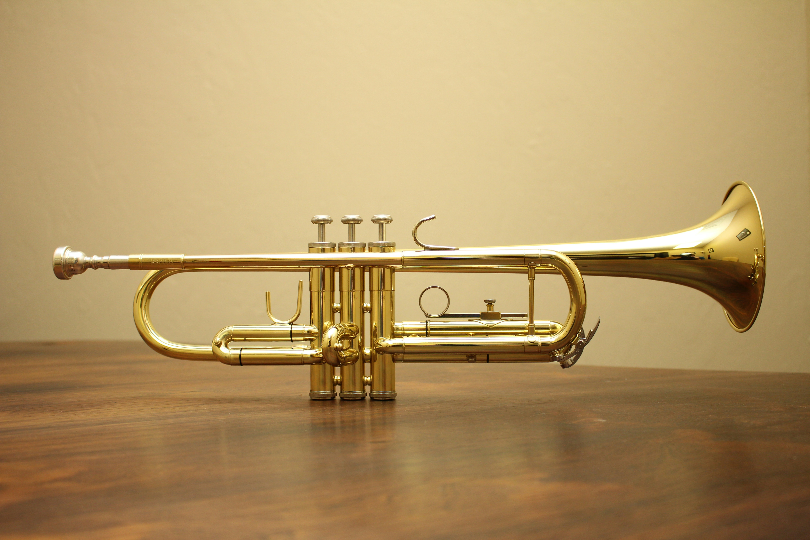

-

Musical Intruments
Violin
The image features a violin displayed in two separate views: front and back. The front view shows the violin's body with its characteristic f-holes, strings, tailpiece, chin rest, and a black fingerboard leading up to the scroll and pegbox with its tuning pegs. The back view reveals the violin's beautifully figured wood grain, which suggests high-quality craftsmanship. The rich, warm tones of the wood and the instrument's elegant curves are clearly visible, highlighting the violin's classical design.
-
Musical Intruments
Tuba
This is a picture of a tuba has a well-worn patina and visible signs of use, with some of its brass finish reflecting the room's lighting. On the right side, there's a table with several water bottles, a mobile phone, and what appears to be a beverage, suggesting this might be a break area for a musician or a practice room. The setting gives a casual, behind-the-scenes glimpse into the daily life of a brass instrument player.
-

Musical Intruments
Flute
The flute's polished surface gleams against the textured, worn paper of the book, providing a contrast between the instrument's preservation and the book's patina.
-
Musical Intruments
Sax
The saxophone itself has a shiny brass finish, with intricate key mechanisms that gleam under the stage lighting, hinting at the dynamic and vibrant nature of a live music performance.
-

Musical Intruments
French Horn
The horn is set against a black background, which accentuates its metallic sheen and the circular shapes formed by the tubing. The valves, with their pearly white tops, stand out in contrast to the golden-brown color of the brass.
-

Musical Intruments
Natural Drum
This image showcases a traditional drum with a natural, earthy aesthetic. The drum has a cylindrical shape with a taut, weathered animal skin head that exhibits a mottled appearance, suggesting it has been well-used. Around the rim, the skin is secured to the body of the drum with a series of what appears to be rope or twine lacing through evenly spaced notches. The body of the drum is composed of a material with a vertical striation texture, reminiscent of wood or a similar natural fiber, which could possibly amplify its resonant qualities. The background is dark, providing a strong contrast that highlights the drum's natural textures and handmade characteristics..
-
Musical Intruments
Gibson Les-Paul Guitar
Vintage Les Paul-style electric guitar, showcasing its golden-yellow sunburst finish with visible age-related checking and minor wear, giving it a classic, well-played look. The guitar features two humbucker pickups with black covers, a cream pickguard, and a tune-o-matic bridge with a stop bar tailpiece. The fretboard appears to be made of dark wood, likely rosewood, with traditional trapezoid inlays. The control area shows two golden knobs, likely for volume and tone, and a three-way pickup selector switch with a round, white tip. Set against a dark background, the guitar exudes a sense of timeless rock and roll history.
-

Musical Intruments
Trumpet
The trumpet gleams with a golden hue, reflecting light across its smooth curves and straight lines. It features a standard three-valve design, with the valves appearing to be in an elevated, unpressed position. The trumpet has a clear lacquer finish that enhances its shine, and the bell flare is wide, which is typical for this type of brass instrument. It's designed with a lead pipe entering the valve casing, and a water key (also known as a spit valve) is visible on the main tuning slide, which is characteristic of concert trumpets. The instrument's maintenance seems immaculate, as there are no visible blemishes or signs of wear.
-

Musical Intruments
Drum Set
The drum kit features a glossy, red wood grain finish and is outfitted with several microphones positioned around the kit, indicating readiness for recording or amplification for a live performance. Visible components include a snare drum, mounted toms, and a floor tom, with clear drumheads that show some signs of use. The cymbal setup includes at least two crash cymbals and a ride cymbal, all mounted on chrome stands. The presence of additional microphone stands suggests a comprehensive setup for capturing the drum sounds with precision. The overall ambiance is one of readiness for a musical performance or session.